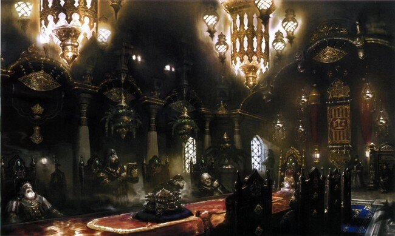
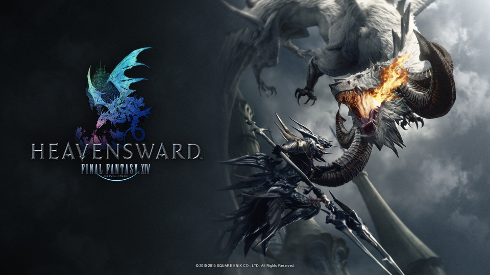
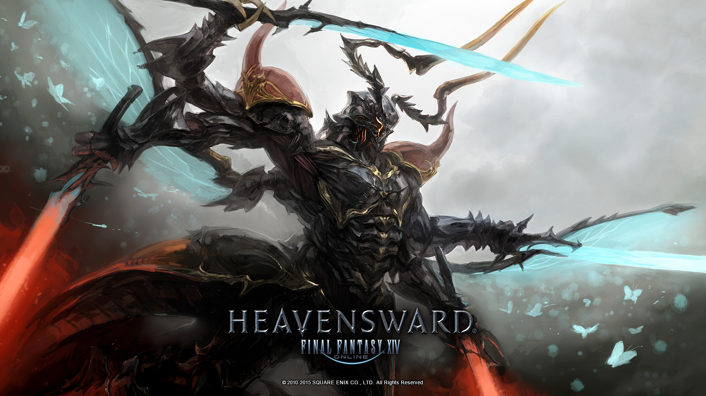
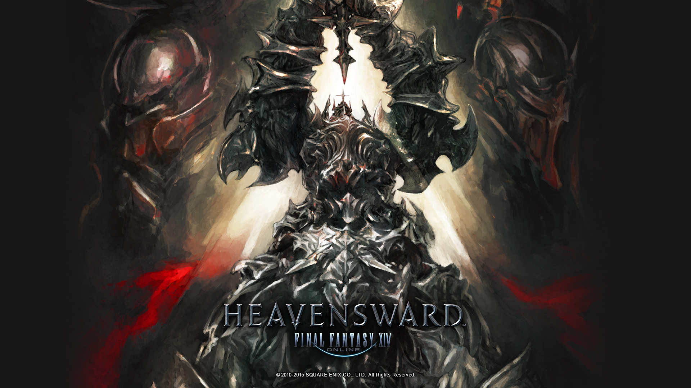
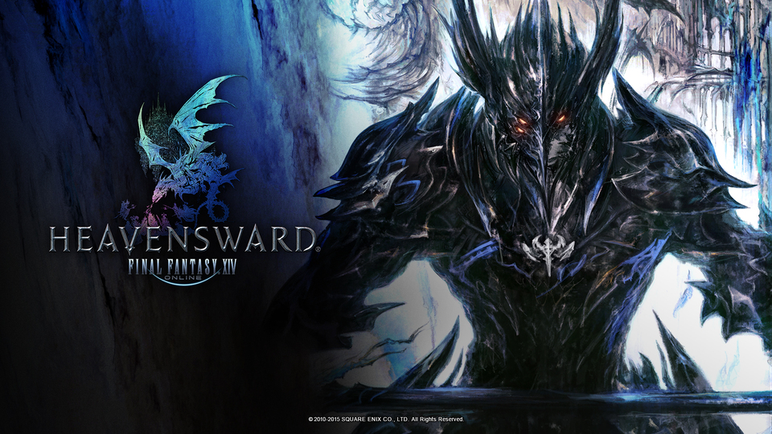
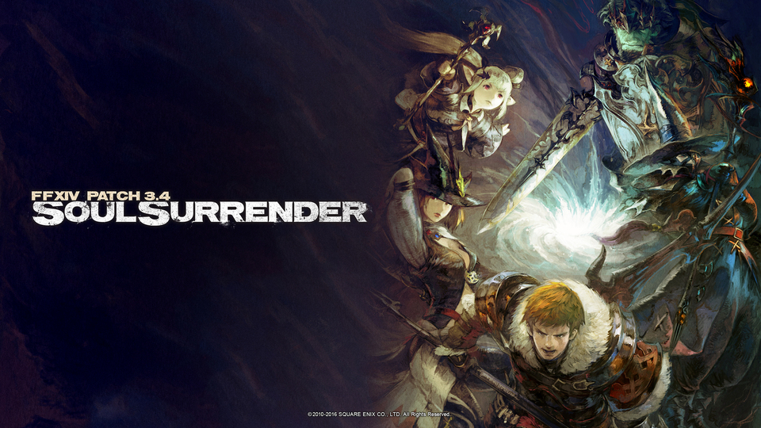

La guerre des cieux
Trahison
Lors du banquet d' ul'dah, un complot éclata, les Héritiers de la Septième Aube ont été trahis par Lolorito un commerçant renommé et ont vu leur honneur souillé et sont désormais grandement affaiblis, beaucoup sont présumés morts mais tout espoir n'est pas perdu.
Au nord d'Éorzéa, dans les terres gelées du Coerthas, un ami et allié précieux, Haurchefant, a
décidé d'offrir aux rescapés de se réfugier à Ishgard, nation qui reste depuis longtemps fermée aux
étrangers.
En guerre avec les dragons de Dravania depuis un millier d'années, la sainte Cité a en effet choisi
de se replier sur elle-même pour mieux se défendre.
Toutefois, l'arrivée de ces invités est vouée à bouleverser le cours des événements, et peut-être
même à faire la lumière sur les zones d'ombre d'une histoire tumultueuse.
Un conflit millénaire
Le conflit entre Ishgard et les dragons est au cœur de l'histoire d'Eorzea. Il s'agit d'un conflit ancestral et profondément enraciné qui a perduré pendant des siècles. Les dragons, dirigés par le dragon Nidhogg, ont mené des attaques incessantes contre la cité d'Ishgard en représailles contre l'assassinat de son frère par les Chevaliers d'Ishgard. Nidhogg a juré une vengeance éternelle sur les descendants de ces Chevaliers.
Ce conflit a entraîné des pertes massives des deux côtés et a maintenu la cité d'Ishgard en état de siège pendant de nombreuses générations. Les dragons ont également invoqué des primals redoutables pour soutenir leur cause, exacerbant ainsi les tensions.
Pendant ce temps, les dirigeants d'Ishgard, y compris l'archevêque Thordan VII, ont exploité la crainte des dragons pour renforcer leur emprise sur le peuple d'Ishgard. Ils ont gardé les vérités sur l'histoire de la guerre secrètes, ce qui a conduit à des tensions croissantes au sein de la population.
À la recherche de la paix
Le guerrier de la lumière poursuit sa quête pour rétablir la paix et la vérité dans le monde d'Eorzea. Après sa rencontres avec Coeur de glace (Ysayle), qui cherchait à mettre fin à la guerre entre les dragons et les hommes, notre héros et ses compagnons décident d'entamer des pourparlers avec Nidhogg, un dragon vengeur. Cependant, la route vers la réconciliation est semée d'embûches, notamment des confrontations avec des primals redoutables tels que Ravana.
Ils parviennent finalement à rencontrer Hraesvelgr, un autre dragon, qui révèle qu'Ysayle a en réalité été en communication avec un primal qu'elle a créé et non pas avec Shiva elle-même.
L'archevêque corrompu
Pendant ce temps, les événements se précipitent dans Ishgard, où les vérités sur le passé de la cité sont sur le point d'éclater au grand jour. Le Guerrier de la Lumière et ses alliés découvrent que l'archevêque Thordan VII et ses partisans cherchent à exploiter les pouvoirs des primals pour leurs propres desseins. Ils parviennent à arrêter un puissant primal appelé Bismarck et libèrent Tiamat, une dragonne emprisonnée. Malheureusement, l'Ascian Igeyorhm parvient à s'emparer de la clé qui permet d'accéder à Azys Lla, une ancienne colonie flottante d'Allag.
Après avoir échappé de justesse à la destruction, le Guerrier de la Lumière et ses compagnons poursuivent leur quête pour révéler la vérité sur le complot des forces religieuses d'Ishgard. Ils sont confrontés à Thordan VII lui-même, qui absorbe le pouvoir de Nidhogg pour devenir un primal redoutable. Malgré un combat acharné, le Guerrier parvient à vaincre Thordan VII et ses Gardes des Cieux.
Le retour de Nidhogg
Alors que tout le monde le pensait mort Nidhogg refait surface, son esprit cherche un nouveau porteur. Il prend le contrôle d'Estinien, un chevalier dragon tourmenté. De retour à Ishgard, le Guerrier de la Lumière apprend que le fils illégitime de Thordan, Aymeric, prend le pouvoir et tente de réformer la cité, ce qui est une très bonne nouvelle, ce dernier étant très éloigné des idéaux de son père.
Une nouvelle ère de paix s'annonce, mais le Guerrier de la Lumière se rend compte que la guerre contre Nidhogg n'est pas encore terminée. Après un terrible combat, le guerrier de la lumière parvient à délivrer Estinien de l'emprise de Nidhogg et met les yeux de ce dernier en lieu sûr pour être sûr qu'il ne puisse plus jamais corrompre personne.
Nouvelles menaces
le Guerrier de la Lumière doit faire face à de nouvelles menaces, notamment les Guerriers des Ténèbres, un groupe d'aventuriers liés à l'ascien Elidibus, qui cherchent à déclencher une guerre des primals. Pour sauver leur monde d'origine, les guerriers des ténèbres ont besoin de plonger celui de notre héros dans le chaos. Dans le passé, ils étaient eux aussi des guerriers de la lumière, cependant en éradiquant les ténèbres, ils ont déséquilibré leur monde et l'ont conduit à sa perte, pour rétablir l'équilibre, il faut plonger un autre monde dans les ténèbres. Après avoir combattu, nos héros, ils décident finalement d'abandonner et de retourner dans leur monde condamné ne pouvant se résoudre à faire le mal.
Malheureusement un de leur membre, le Griffin avait pour objectif de provoquer un conflit entre l'Empire Garlemald et Eorzea. Pour ce faire, il a invoqué Shinryu, un primal extrêmement puissant, en utilisant les yeux de Nidhogg qu'il avait retrouvé. Cela finit par entraîner la bataille du mur de Baelsar. Lorsque Shinryu menace de détruire à la fois l'Empire de Garlemald et Eorzea. Les héritiers de la septième aube et d'autres protagonistes interviennent pour stopper Shinryu et empêcher la catastrophe. Papalymo, l'un des héritiers, utilisa un puissant sort de scellement pour maintenir Shinryu sous contrôle. Papalymo sacrifia sa vie pour accomplir cet acte héroïque.